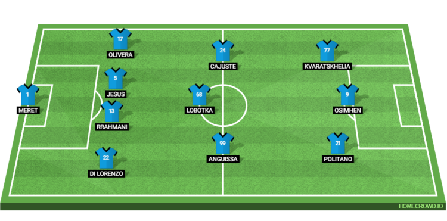
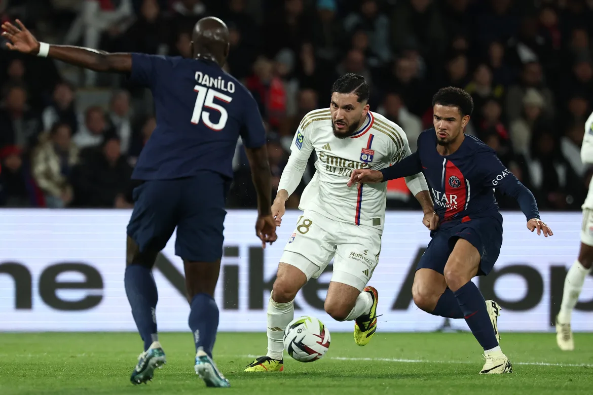

Relegation threatened Udinese will be keen to drive another sword into Napoli’s forgettable 2023/24 Serie A campaign.
The last encounter between SSC Napoli and Udinese Calcio at Stadio Fruili dates back to May 2023, a memorable night for Gli Azzurri as they clinched a crucial 1-1 draw, securing their first Scudetto in 33 years. Fast forward a year, and the scenario is starkly different for the defending champions. Napoli have not only relinquished their title but now find themselves in a struggle to even secure a spot in European competitions. With a top-five finish increasingly challenging, Napoli’s focus shifts to salvaging pride and concluding the season on a positive note. In contrast, Udinese have everything to fight for. Positioned in the midst of a relegation battle, Le Zebrette cannot afford anything less than a victory. Failure to secure three points could leave them facing an uphill battle in the remaining matches. The recent unexpected victory of Sassuolo over Inter Milan only amplifies the pressure on Udinese to deliver. Fabio Cannavaro’s squad faces crucial relegation six pointers against Empoli and Frosinone Calcio, making a win over Napoli pivotal in easing their survival concerns. While Udinese’s seven-match winless streak in Serie A is concerning, Napoli’s vulnerability throughout the season has been evident, with the visitors themselves enduring a three-game winless run. Confidence may be lacking in the Napoli camp, placing the onus on Udinese to seize the initiative and take the game to their opponents. The Hard Tackle delves into the potential elevens and tactics for this highly-anticipated clash.
Team News & Tactics
Udinese Calcio
Udinese face a tough challenge this weekend with several key players sidelined. Florian Thauvin, Sandi Lovric, Lautaro Giannetti, backup goalkeeper Marco Silvestri, and long-term absentee Gerard Deulofeu are all unavailable. To compound their situation, Fabio Cannavaro will also be without Nehuen Perez and last week’s goalscorer Martin Payero, with both serving one-match suspensions. Cannavaro is expected to set his side up in a 3-5-2 formation, with Maduka Okoye in goal. He should be protected by the back three of Joao Ferreira, Jaka Bijol and Thomas Thiesson Kristensen. The trio of Walace, Oier Zarraga, and Lazar Samardzic should form the central midfield trio, freeing up Kingsley Ehizibue and Hassane Kamara to push up the field on the wings.
Roberto Pereyra and Lorenzo Lucca should lead the line on the night. The formation will also give Udinese the freedom to shift to a 3-4-2-1 when needed, with Samardzic pushing forward and Pereyra dropping deeper to act as the second number 10.Probable Lineup (3-5-2): Okoye; Ferreira, Bijol, Kristensen; Ehizibue, Zarraga, Walace, Samardzic, Kamara; Pereyra, Lucca

SSC Napoli
Apart from Piotr Zielinski, Francesco Calzona has a fully fit squad to choose from. His side did well against AS Roma last time around and can consider themselves unlucky to not secure a win on the night. However, Napoli have been their own doomsayers this season, with their crippling inconsistency largely seeing them fall short. Calzona will have an eye on taking Slovakia to this summer’s Euros, and ending the current campaign on a high note will certainly see him leave Naples with the fans’ blessings.
Napoli are expected to line up in a 4-3-3 formation, with Alex Meret in goal. He should be protected by the back four of Giovanni Di Lorenzo, Amir Rrahmani, Juan Jesus and Mathías Olivera. Stanislav Lobotka should act as the central midfield pivot, freeing up Andre-Frank Zambo Anguissa and Jens Cajuste to push forward. The frontline, on the other hand, more or less picks itself. Victor Osimhen will be the pivotal piece upfront, with Matteo Politano and Khvicha Kvaratskhelia providing the width. Probable Lineup (4-3-3): Meret; Di Lorenzo, Rrahmani, Jesus, Olivera; Anguissa, Lobotka, Cajuste; Politano, Osimhen, Kvaratskhelia
Key Stats
- Udinese have not won any of their last 15 Serie A games against SSC Napoli. During this run, they have managed just two draws while losing the remaining 13 matches.
- Napoli have won five of their last seven away games vs Udinese.
- Udinese are winless in their last seven Serie A matches while Napoli have not won any of their last three league games.
- Napoli have defeated teams in the bottom three just four times in their eight clashes so far this season.
- Udinese have won just one of their 17 home games in the Serie A so far this season.
Player to Watch
Victor Osimhen
Napoli’s top goal scorer, the Nigerian ace, holds the key to their success, particularly when he is in form. Unfortunately, injuries have hampered his impact this season, leaving his future uncertain. However, with the campaign drawing to a close, he is eager to finish on a high note. Despite tallying 14 goals in the league, which might seem low for a player of his caliber, it reflects the struggles Napoli have faced collectively this season. Osimhen recently found the net from the penalty spot against AS Roma and will be determined to maintain his momentum. If he is on song, Udinese could be in for a challenging evening.
Prediction
Udinese Calcio 2-2 SSC Napoli
Napoli will aim to score an early goal. But Udinese, despite their poor form, will fight tooth and nail for a positive outcome. Both teams are struggling to stay solid at the back, and it could turn into a goal fest with the side with the better frontline coming out on top. The Hard Tackle predicts a draw with both teams settling for a point.
